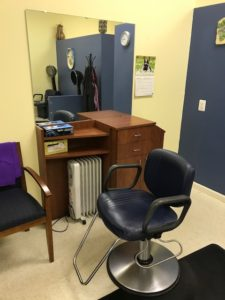

~8:30AM – The whole crew arrived this morning after a fitful night sleep. Kim, Cyndie, Chad, Wade all came in and got the update on Sue. She was still pretty lethargic and apparently that was from her getting some sleeping meds last night. With the med, however, she slept through most of the night.
Her mouth was really gunky, which is expected after sleeping for basically the last 24 hours. We got that cleaned up a bit, her teeth got brushed, and she shoo’d us all out of the room so that she could go to the bathroom. (Still bedridden, but she doesn’t like anyone around while she does her business. That pride runs deep.)
We are all back in and waiting for rounds. Sue is comfortable and has her water lollipop, so she seems content right now.
~11:00AM – Both good news and bad news. The speech therapist came in, but Sue was really too tired to do anything. Then PT/OT came in, and Sue was still out of it, but we found out why. Apparently, the day nurse, Nurse S, decided that she was agitated after trying to go to the bathroom (which she certainly was not), so she sedated her at 9:30AM. We are all extremely angry at this. In addition to making it harder for her to do speech therapy and PT, sedating her during the day is not going to help with her sundowning. Very frustrating.
 However, there is still some good news. PT/OT came in and moved her to a chair today! They had her sit up, balance a little bit, do some reaching and grabbing exercises, and then moved her to a chair.
However, there is still some good news. PT/OT came in and moved her to a chair today! They had her sit up, balance a little bit, do some reaching and grabbing exercises, and then moved her to a chair.
All in all, we are considering this a win for the day.
~1:00PM – Sue is still sitting up in her chair and has finally woken up a bit. Rather than watching tv, we have set up a device for her to listen to a book that she was reading – The Apartment, by Danielle Steele. Opening line? “Claire Kelly … was wearing a short black cotton dress and sexy high-heeled sandals with ribbons that laced up to her knees.” Yep. This is what I am willing to endure for my beloved Sue…
~3:00PM – I had a very sad experience this afternoon. I went to Sue’s shop where she has worked for over 20 years (the only place she’s ever worked since I’ve known her) and cleaned out her station. It was sad only because it was such a clear and visual indicator of the changes that are happening. Sue will live, and she will regain a lot of who she was and continues to be, but life will never be the same after this.
~5:30PM – Sue is having a hard time. We are pretty sure most of it is just the realization of how much this sucks, but she is also complaining about stomach pain. That is a bit of a concern because of the PEG tube, so they are bringing in an x-ray to check and make sure that everything is okay.
We have also had some problems with our nurse, Nurse S, so Kim is now speaking with the director to determine how we can avoid situations like this in the future. It is sad that in this type of place with this type of stress, there are people that make it worse instead of better.
~4:00PM – After a frustrating day, the hospital came back around in amazing fashion. It became clear that our frustrations were concerning to the staff as well, and several nurses and doctors checked in on us throughout the day to make sure that we were okay. The charge nurse and the head of the department spoke with Kim, and allowed her to vent her frustrations. They confirmed our thoughts, which was that Sue never should have been given a sedative during the day, and the nurse certainly should not have hidden that fact from us (she actually mixed the sedative in with other things and conveniently *forgot* to tell us that was part of the mixture). Needless to say, she had limited interaction with us for the rest of the day and will never be our nurse again while we are in the ICU.
Kudos to INOVA ICU. They took a bad situation and corrected it better than we thought possible. It’s only been a week, but I have a lot of love and respect for the staff and the facility of this place, and am glad that we ended up here rather than other places in the area. I am convinced that Sue is getting the best treatment possible, and all but two of the people with whom we have interacted thus far have been exemplary.
~5:30PM – The time is imprecise, but at some point Kim spoke with Dr. Z (a favorite) about spending the night and if that was a help or a harm. Essentially, Dr. Z said that it was a waste at this time. In the ICU – and even the CCU following this stay – Sue has multiple hands on round-the-clock care. There is nothing that we can add or do for her that isn’t being done by medical staff. Dr. Z said that after CCU, when she is in recovery or rehab, she will have less care – multiple patients to one nurse – and it is then that we can play a bigger role. Her recommendation was to spend our nights at home during this time, let sleep battle the emotional toll that we are under, and prepare for longer days and more self-reliant care in the future when it is more needed. I’m not sure how everyone will do with that (the first night we were all at home was hard), but it makes sense and will be much easier on the family as a whole.
~8:00PM – Sue has basically been sleeping off and on and has largely been lethargic and unmotivated to do anything. She doesn’t seem interested in TV or having us talk to her, so we are hoping this just the effects of the sedative still wearing off in her system. We are heading home for the night.
---end---
So happy that Mama Sue enjoying her book – love her so much!
So good to see her out of that bed! Very frustrating someone would sedate her knowing she would be seeing PT/OT this afternoon! Or mentioning it before hand as you’ve been completely engaged in care! Hopefully her night won’t be as bad tonight. Hugs and continuing prayers.
I’m so glad they got her up & moved her to chair. Every little movement helps, I’m sure. The things that happen on a daily basis there certainly will require an advocate for Sue to be present for her. Glad you are all there. Prayers for her continuing progress.
Hey guys…. glad and thankful to hear that Sue is at least moving somewhat forward.
Al and I are continuing to pray for all of you!
Please let us know if you need us to do anything😘
It is so infuriating that a nurse would make such a self-serving “judgement call”! I’m glad that they’re not getting away with it. It’s awesome that she’s progressing with her exercises! I’m rooting for her and keeping everyone in my thoughts and prayers! <3<3<3